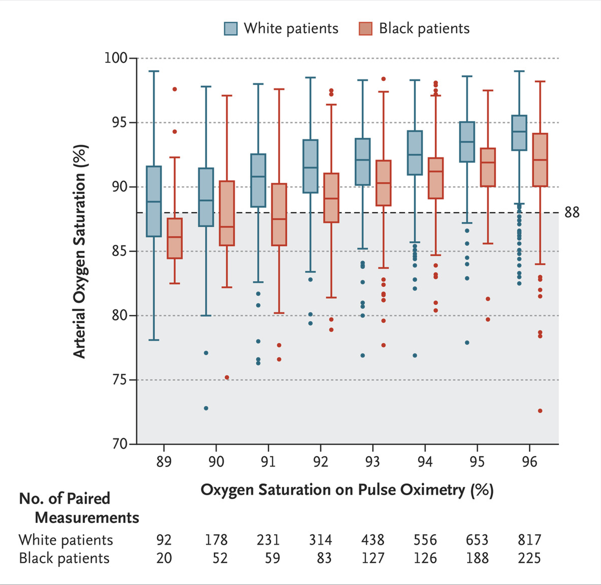

Google, University of Toronto, Vector, Trillium, Memotext, and Odaida
Toronto Health Datathon
Introduction
The Toronto Health Datathon is an event to apply artificial intelligence to address real-world challenges within the Canadian healthcare system. Participants work collaboratively to analyze healthcare data sets and develop innovative solutions using the given datasets.
For more information about this event, please click here.
Our team utilized Python in Google Colab to create a linear regression model. The main objective was to predict a patient's race and ethnicity based on SaO2 and SpO2.
SaO2: the oxygen saturation of arterial blood measured by blood gas analysis.
SpO2: the oxygen saturation of arterial blood detected by the pulse oximeter.
Pulse oximeters are devices that measure oxygen levels using infrared light in the fingertip and they tend to overestimate oxygen levels in individuals with darker skin due to light absorption differences. This can result in a racial and ethnic bias in SpO2 readings compared to SaO2.
The development of a machine learning model that analyzes the difference between SaO2 and SpO2 to predict the race and ethnicity of a patient holds significant potential in the healthcare field. This model could serve as a valuable tool for assessing health disparities among diverse racial and ethnic groups while providing a concise measurement of blood oxygen levels for each patient. While it also poses some ethical issues, I realized such a development could have a profound impact on healthcare research and patient care.
Our team trained a linear regression model, refining it to effectively address these biases. This process involved identifying patterns and relationships within the data to make accurate predictions.

We had the opportunity to present our findings and model to the audience, which included healthcare professionals and data science experts. The presentation highlighted the model's logic and its potential applications in healthcare scenarios.
As a result, our team secured 2nd place in the datathon.
Through this event, I learned the existing biases in the medical field and the way to effectively utilize them to advance the healthcare system. I also gained practical knowledge in constructing machine learning models using provided datasets, which greatly improved my technical skills.